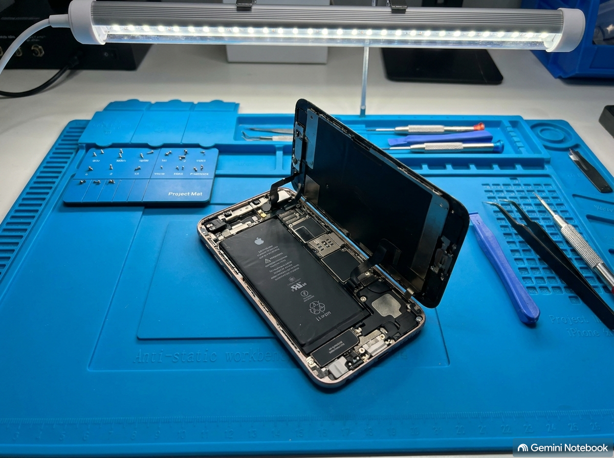
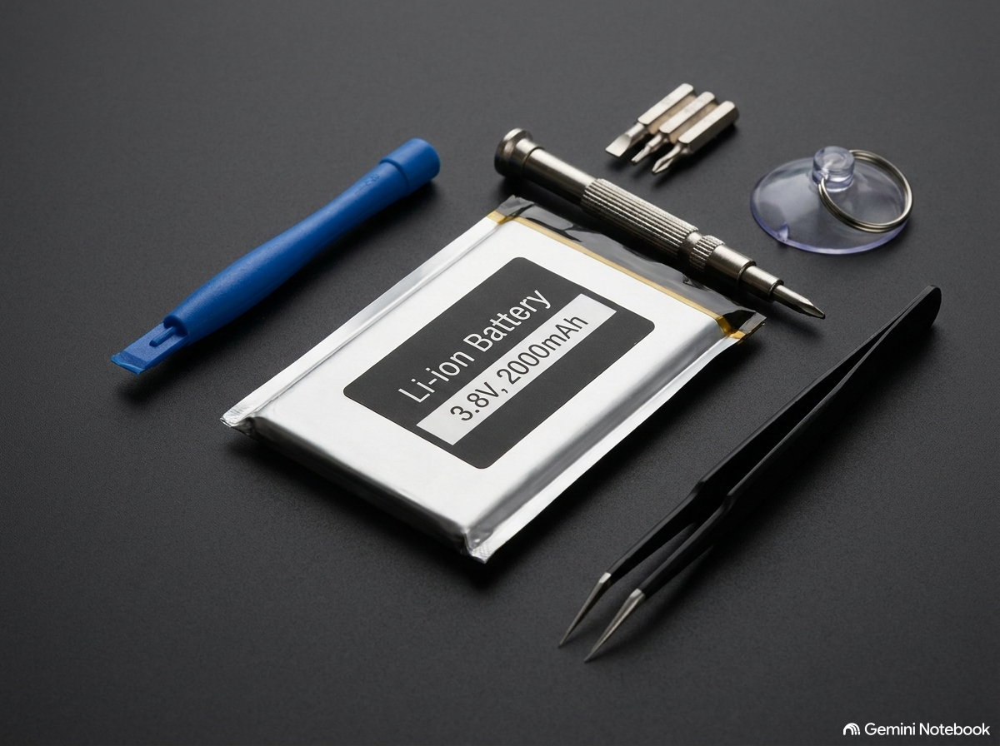

HK iPhone Repair Expert
主頁
服務目錄
維修展示
最新活動與聯絡
iPhone 現場即時維修實況與高品質零件展示
維修實況影片 (Video)
您的瀏覽器不支援影片播放。
維修照片與原廠零件規格 (Photos)


專業工程師團隊與設備標準
採用防靜電無塵工作台，確保 iPhone 零件維修品質。
顧客可於現場親眼監督維修過程，確保個人資料隱私安全。
嚴格執行維修後 20 項功能檢測流程。